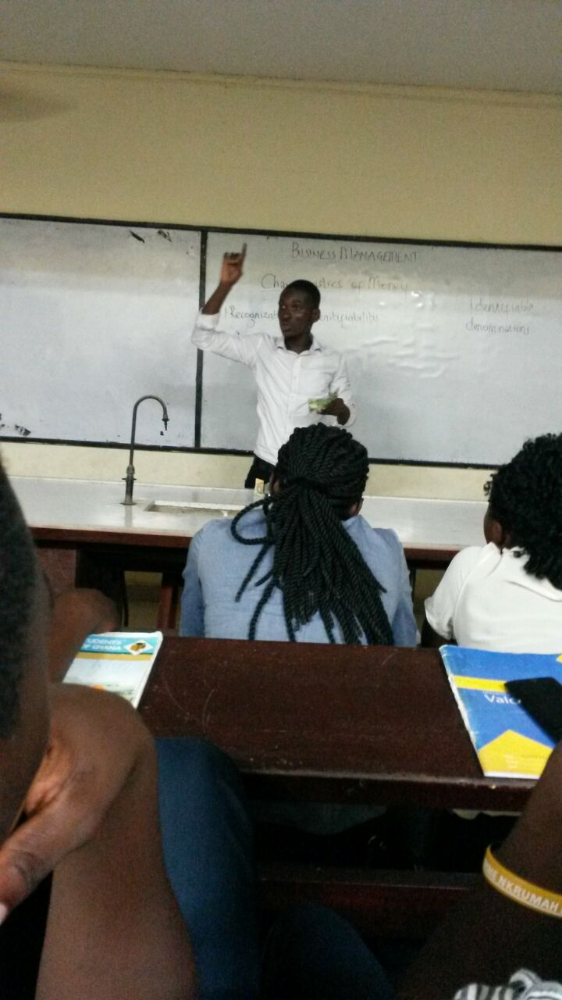

Education, according to Coombs (1970),consists of two components,
inputs and outputs. Inputs consist of human and material resources and
outputs are the goals and outcomes of the educational process.
Both the input and output form a dynamic organic whole and if one
wants to investigate and assess the educational system in order to
improve its performance, effects of one component on the other must be
examined
Availability of teaching and learning resources (TLR) enhances the effectiveness of schools as these are basic things that can bring about good academic performance in the students. Maicibi (2003) opined that all institutions or organization are made up of human beings (workers) and other non-human resources. He further asserts that when the right quantity and quality of human resources are brought together; it can manipulate other resources towards realizing institutional goals and objectives. Consequently, every institution should strive to attract and retain the best of human resource. The economic austerity in recent times, coupled with the need for expansion of access to education, have combined to present educational planners worldwide with increasingly difficult choices in the allocation of 
According to the United Nations Convention (1989), every student has a fundamental right to learn and develop to his or her full potential through access to quality education regardless of their age, gender, origin or social background. Ghana is a signatory to the UN convention and has passed several laws to ensure that all children are entitled to their constitutional rights as contained in the 1992 Constitution. This was done in the light of the fact that senior High School is the most critical period for cognitive and social development in all students. It is important to note that, the absence of these educational resources, any set up dreams to achieve the vision 2030 and to fulfil the UN conventions on the Right of Children becomes elusive. Education is also key to economic growth in Ghana as explained by our Educational Minister (Dr. Mathew Prempeh) hence demands a lot of attention. It is in this view that, the research will establish the rationale behind the usage of teaching and learning materials and how they will make teaching effective in Senior High School in Cape Coast Metropolis.
| 52 | 52 | 52 |
| 52 | 52 | 52 |
| 52 | 52 | 52 |